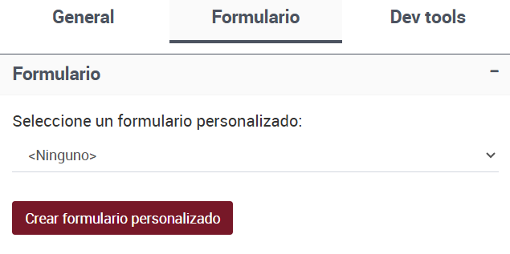
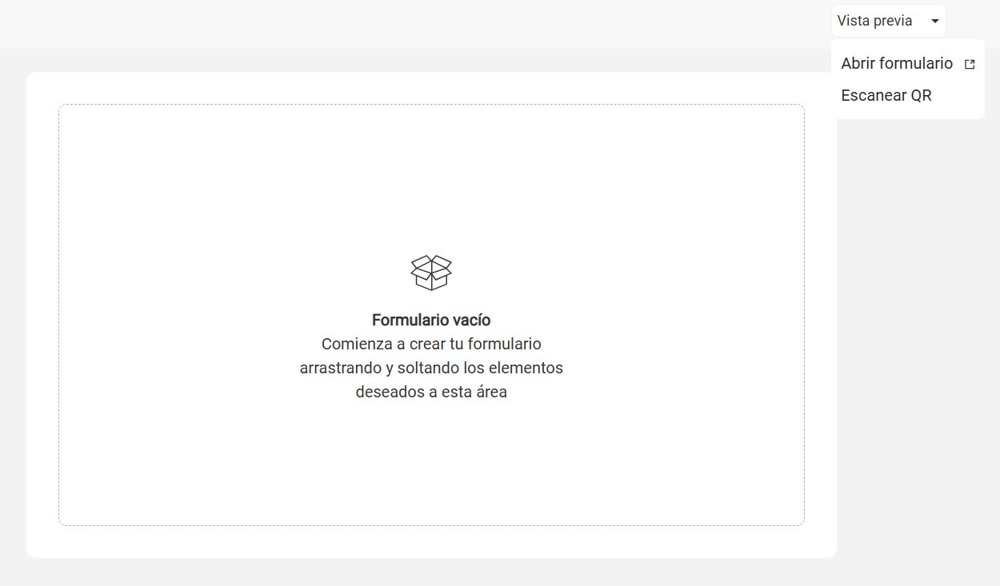

Crea tu formulario personalizado
Este tutorial describe paso a paso cómo construir un formulario en el diseñador de formularios personalizado para digitalizar una solicitud de compra de insumos, con revisión posterior por parte de un supervisor.
El objetivo es construir un único formulario cuya visibilidad se adapte según el paso del proceso: primero para que el empleado complete la solicitud, y luego para que el supervisor la visualice y tome una decisión.
Contexto del proceso
Un área administrativa necesita recibir solicitudes de compra de materiales de oficina. Los empleados deben detallar los insumos requeridos, y un supervisor debe revisar y aprobar (o rechazar) cada solicitud.
El flujo contempla dos etapas principales:
Ingreso de la solicitud: por parte del empleado.
Revisión y decisión: a cargo del supervisor.
Antes de crear los formularios personalizados, asegurate de que el proceso ya tenga definidos los pasos correspondientes en el diseñador de procesos.
El flujo debe incluir al menos los siguientes pasos:
Evento de inicio - Solicitud de compra (rol Empleado): permite al usuario registrar los detalles de la solicitud, incluyendo la descripción de los insumos, la cantidad requerida y una justificación de la compra.
Tarea de usuario - Revisión de solicitud (rol Supervisor): permite al supervisor analizar la información ingresada por el empleado, agregar observaciones si corresponde, y tomar una decisión sobre la aprobación o el rechazo de la solicitud.

Ingresá a Design y seleccioná el proceso en el que vas a construir el formulario personalizado.
Hacé clic sobre el paso Evento de inicio: Solicitud de compra (rol: Empleado).
En el panel derecho, dentro de la sección Formulario, seleccioná Crear formulario personalizado.
El sistema generará automáticamente el nombre del formulario y lo vinculará al nombre del flujo.
Luego, seleccioná el paso Tarea de usuario: Revisión de solicitud (rol: Supervisor) y asigná el mismo formulario creado previamente.
{kind=link}
Nota
El mismo formulario puede utilizarse en varios pasos del proceso. La visibilidad de sus componentes se configurará más adelante, según el rol y el paso correspondiente.
Diseñar el formulario único con visibilidad por paso
El formulario será utilizado tanto por el empleado como por el supervisor en diferentes pasos del proceso. La estructura visual es única, y lo que varía es la visibilidad de los datos según el paso.
Componentes a incluir
Desde el panel izquierdo, arrastrá los siguientes componentes al área central del diseñador y asignales los siguientes nombres:
Tipo de componente |
Nombre |
|---|---|
Texto (una línea) |
|
Número |
|
Texto (varias líneas) |
|
Casilla de verificación |
|
Texto (varias líneas) |
|
Configurar visibilidad y comportamiento de campos
La visibilidad de los campos y el comportamiento en cada etapa del proceso se define desde el diseñador de formularios, para nuestro proceso es necesario definir:
Paso del empleado (Solicitud de compra):
Descripción de insumo,Cantidad Solicitada,Justificación del Pedido: editablesAprobado,Observaciones: ausentes
Paso del supervisor (Revisión de solicitud):
Descripción de insumo,Cantidad Solicitada,Justificación del pedido: solo lecturaAprobado,Observaciones: editablesRespuestas: “Aprobar”, “Rechazar” (para más información sobre el manejo de respuestas, ir a la subsección Tarea de Usuario del enlace)
Estas configuraciones permiten adaptar el comportamiento del formulario a cada etapa del proceso:
En la solicitud, el empleado completa los campos necesarios, mientras que los campos reservados para el supervisor permanecen ocultos.
En la revisión, el supervisor puede visualizar los datos ingresados por el empleado sin modificarlos, y acceder únicamente a los campos que debe completar para tomar una decisión.
Nota
Todos los datos se agregan una única vez en el formulario. La visibilidad y el comportamiento se configuran desde el diseñador, según el paso del proceso.
Validar el diseño con vista previa
Desde la barra superior del diseñador, hacé clic en Vista previa y selecciona «Abrir Formulario».
Se abrirá una pestaña con la estructura visual del formulario activo.
Verificá:
Etiquetas, alineación y disposición de los campos.
Comportamiento visual en escritorio y dispositivos móviles.
{kind=link}
Si lo deseás, utilizá la opción Escanear QR para probar el formulario en un celular o tablet.
Nota
La vista previa no simula la ejecución real del proceso. Para validar comportamientos como navegación, decisiones o reglas, es necesario ejecutar una instancia real del flujo.
Ejecutar una instancia de prueba
Desde Design, publicá la versión actual del proceso.
Luego, iniciá una instancia desde Task, donde comienzan los procesos.
Resultado esperado
El Empleado accede al formulario con todos los campos habilitados para ingreso.
El Supervisor accede a los mismos campos en modo solo lectura, con nuevos campos para tomar la decisión.
El formulario respeta la visibilidad y configuración definida en cada paso.
Las acciones del supervisor pueden activar pasos posteriores o integraciones definidas en el diseño del proceso.
Este enfoque permite mantener formularios separados para cada rol, reutilizando datos sin necesidad de duplicación y controlando exactamente la visibilidad y comportamiento esperados en cada tarea.
Nota
Para realizar una prueba completa, asegurate de asignarte como usuario en ambas tareas y completar los formularios correspondientes: primero como empleado y luego como supervisor.